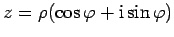
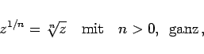
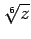
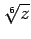

Radizieren oder Ziehen der n-ten Wurzel aus einer komplexen Zahl ist eine zum Potenzieren inverse Operation. Für  ist
|  | (1.143a) |
die abkürzende Bezeichnung für die n Werte
Während Addition, Subtraktion, Multiplikation, Division und Potenzieren mit ganzzahligen Exponenten zu eindeutigen Ergebnissen führen, liefert das Ziehen der n-ten Wurzel stets n verschiedene Lösungen  .
.
Geometrisch interpretiert sind die Punkte  die Eckpunkte eines regelmäßigen n-Ecks mit dem Mittelpunkt im Koordinatenursprung. In der folgenden Abbildung sind die 6 Werte für  dargestellt.
die Eckpunkte eines regelmäßigen n-Ecks mit dem Mittelpunkt im Koordinatenursprung. In der folgenden Abbildung sind die 6 Werte für  dargestellt.